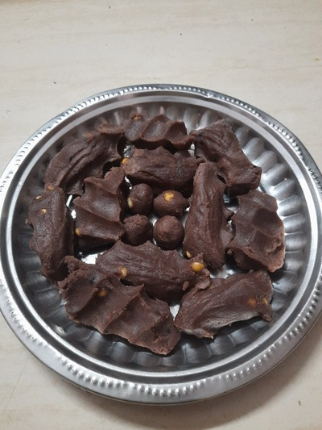

Red rice kozhakatte

Description
Sleeky, softy and tasty kozhakatte for you try on!
Ingredients:
- 250gm Red rice flour with salt added
- 500ml water
- 1/2 cup jaggery
- 1 tspn til black
- 1 tspn cardamom
- 3 tspns ghee
- 1/2 cup bengal gram
- 2 tspns gingelly oil
Steps:
- Pour the water into a pan with jaggery and let it boil
- Add bengal gram and cardamom when water with jaggery starts boiling
- Take red rice kozhakatte flour in a vessel
- Pour the pan stuff into the vessel containing flour
- Add til black and gingelly oil
- Use hands(careful maybe hot) to mix it all till it have good consistency
- Use Idly cooker or anything like steam cooker to cook for 15-20 mins
- That's all! Enjoy the tasty and healthy kozhakatte.